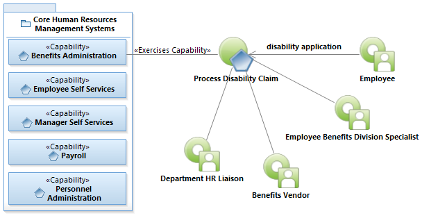
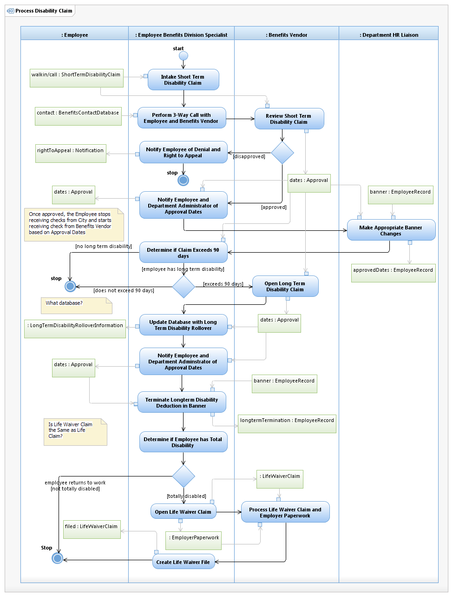

Use Case Model: Process Disability Claim
Architect: Rob Byrd, Chief Enterprise IT Architect
Date Last Modified: 06/06/2012
User Review: Andrea Glasper, Benefits Specialist
Date:
The Employee Benefits Division Specialist intakes the Short Term Disability Application and reviews for completeness. The Employee sends the application to the Carrier who reviews for approval. If denied, the Benefits Specialist advises Employee on right to appeal. If approved, the Benefits Specialist notifies the Employee and the Department Administrator of the approved dates. If the Employee has Long Term Disability and it is determined that the disability requires more than 90 days, the Carrier opens a long term disability claim and the Benefits Specialist updates a database with long term disability rollover information. The Employee and Department Administrator are notified of the approval dates. If the Employee has a total disability the Benefits Specialist opens a life waiver claim and informs the Carrier to process life waiver claim with additional employer paperwork. The Benefits Specialist concludes by creating a life waiver file on the Employee.
Follow link to Role Definitions

Use Case Model: Process Disability Claim

Activity Model: Process Disability Claim
Activity Documentation
| Activity | Documentation |
|---|---|
| Intake Short Term Disability Claim | Employee contacts EBD to apply for short term disability. If the injury or illness is not job related the benefit will apply. All employees who work at least 20 hours a week are eligible for short term disability as long as this is not a on the job injury or illness. Specialist or Consultant do an intake with the employee asking basic questions on illness/injury, last date of work, current address, phone number, etc. |
| Review Short Term Disability Claim | Call would be transferred to the disability carrier to file a claim. |
Note: When the activity is self explanatory no documentation is provided.